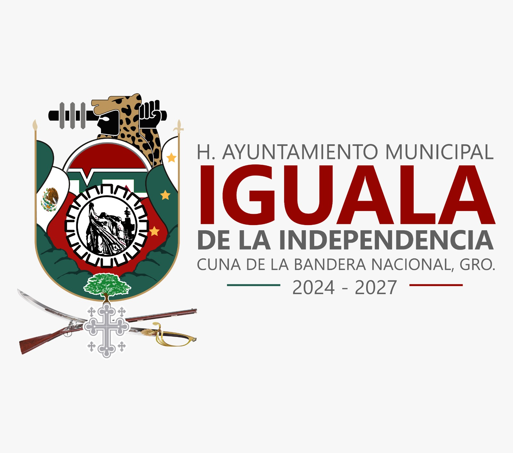

La Secretaría de Fomento Deportivo y Cultural del H. Ayuntamiento de Iguala de la Independencia tiene como finalidad promover el desarrollo integral de la ciudadanía mediante estrategias que fortalezcan la práctica deportiva, la expresión cultural y la participación social.
Se busca impulsar programas permanentes que fomenten la disciplina, la inclusión, el respeto y la identidad cultural, garantizando el acceso equitativo a espacios deportivos y culturales para toda la población.
Se pretende consolidar a Iguala de la Independencia como un referente regional en materia deportiva y cultural, fortaleciendo el tejido social y promoviendo el talento local mediante políticas públicas responsables y estratégicas.
• Promover actividades deportivas formativas y competitivas.
• Impulsar talleres artísticos y culturales.
• Organizar eventos comunitarios de alto impacto social.
• Fortalecer la identidad municipal mediante la cultura y el deporte.